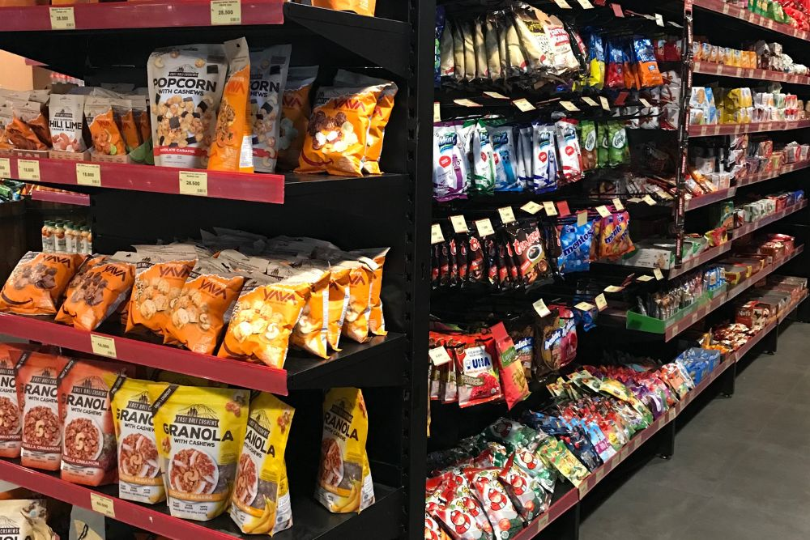
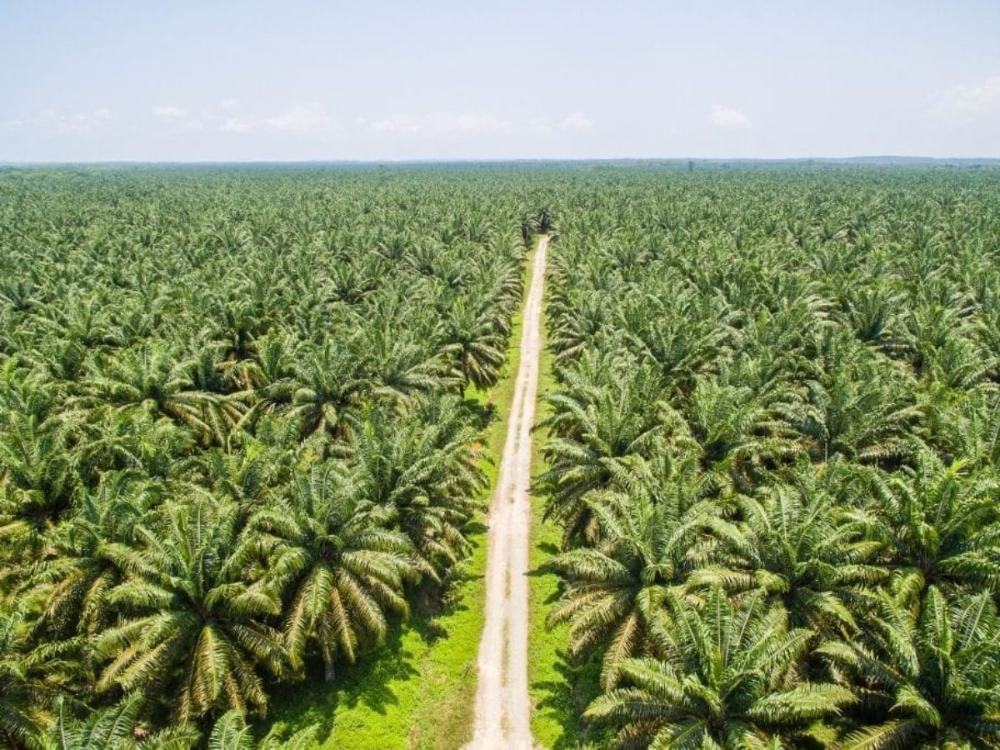

Rainforest
A living forest supports orangutans through food, canopy movement, nesting, and shelter.
From plantation to product
Once palm oil enters the supply chain, rainforest loss becomes harder to see. It moves through mills, exporters, manufacturers, and markets before appearing in ordinary products on a shelf.

A cookie, shampoo bottle, or bar of soap does not look like a rainforest. That is the problem. The final product hides the long chain of land, labor, transport, processing, and ecological loss that made it possible. Palm oil is common because it is cheap, efficient, and useful in many processed foods, personal care products, cosmetics, and household cleaners.[1]
The question is not whether one product destroys one forest. The deeper issue is scale. When palm oil becomes a standard ingredient across thousands of products, small acts of consumption become part of a much larger demand system. The harm is not located in one purchase; it is built into the system that makes cheap and convenient products available.
Where it hides
Many consumers do not recognize palm oil because it can appear under different names and derivatives. It may be present in snacks, instant noodles, chocolate spreads, soaps, shampoos, cosmetics, and cleaners. The ingredient becomes ordinary precisely because it is so widely used.
This makes palm oil a useful case for understanding biodiversity loss. The issue is not only that tropical forests are cleared. It is that the ecological cost becomes separated from the consumer experience. The product feels local and personal; the damage remains distant and difficult to imagine.

Supply chain evidence
Trase’s Indonesia palm oil supply-chain visualization traces palm oil from provinces of production through mill groups, exporters, and countries of first import.[2] This matters because it shows that palm oil is not only a crop. It is a movement system. The commodity travels through many intermediaries before it becomes part of consumer markets.
The flow diagram makes one thing clear: responsibility is distributed. Forest loss may happen in a specific province, but the demand that makes that production valuable comes from far beyond that province. The supply chain separates the place where damage occurs from the places where products are sold and used.

The Anthropocene can sound huge and abstract: humans as a force changing the Earth. But the palm oil chain makes that idea concrete. Forests are cleared, replanted, processed, shipped, and absorbed into everyday commodities. Human economic activity does not simply use nature; it redesigns landscapes around production.
Elizabeth Kolbert describes the Anthropocene as a period when human activity leaves lasting marks on the planet, from altered carbon cycles to changed species distributions and accelerated extinction rates.[3] Palm oil shows this through land. A rainforest becomes a plantation. A habitat becomes an input. A species’ future becomes tied to global demand.
Media framing
The video “Rang-tan” uses animation to connect a child’s bedroom, palm oil, deforestation, and orangutan habitat loss.[4] Its story is simplified, but that simplicity is useful: it turns a difficult supply-chain problem into a relationship that can be felt.
The challenge is to avoid stopping at emotion. Feeling sympathy for an orangutan is only the first step. The harder question is what kind of system keeps making forest loss profitable, invisible, and easy to ignore.

Oil palm plantations are often described as productive landscapes. They do produce value, oil, export revenue, and ingredients for global markets. But productivity is not the same as ecological richness. A plantation is organized around one crop; a rainforest is made of many species interacting across layers, seasons, and habitats.
This difference is central to biodiversity loss. The land is not only changed visually. It is changed in what it can support. Orangutans may sometimes enter plantation areas, but plantations cannot replace the connected, food-rich forests needed for long-term survival.
A living forest supports orangutans through food, canopy movement, nesting, and shelter.
Forest is converted into land organized around palm oil production.
Palm oil moves through mills, exporters, manufacturers, and importing countries.
The ingredient appears in food, soap, shampoo, cosmetics, or household items.
The product is not separate from the forest. It is the final, polished form of a chain that began with land. Once that chain is visible, biodiversity loss becomes harder to dismiss as a distant wildlife issue.
From product to responsibility
The issue is not solved by individual guilt. The more useful question is how consumers, companies, governments, and public pressure can make hidden supply chains harder to ignore. The next page turns from awareness to action.
Continue to What Now?